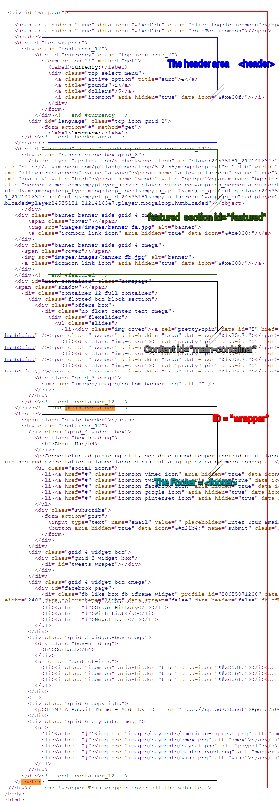
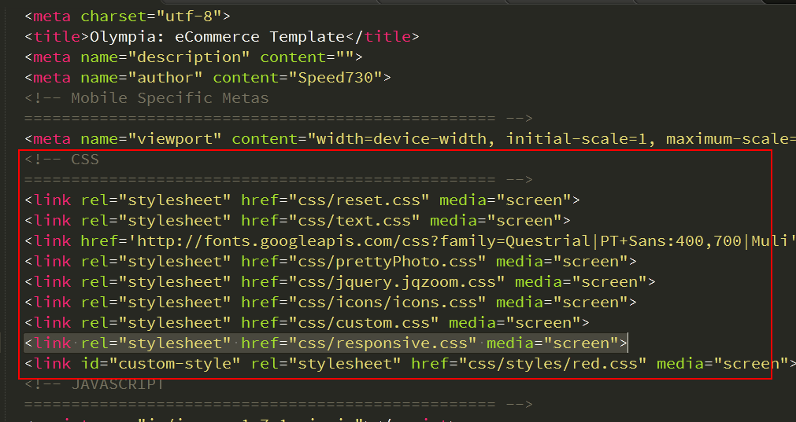
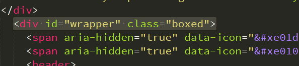
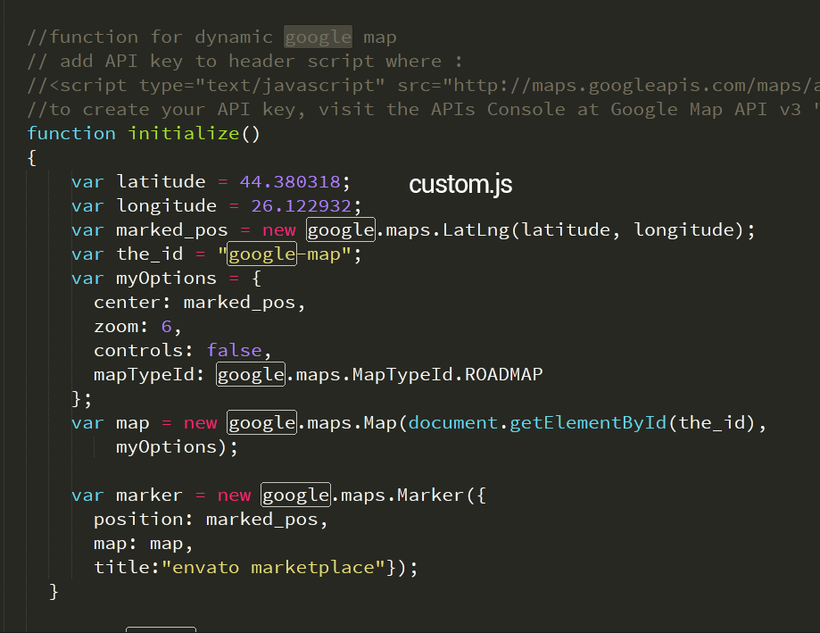
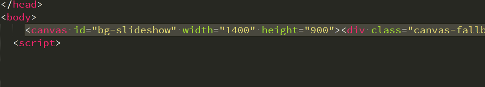
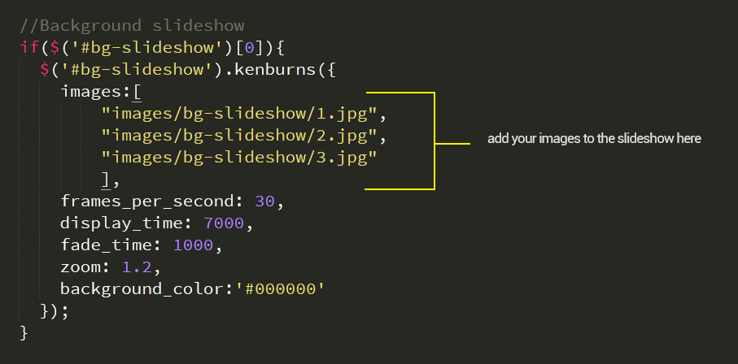
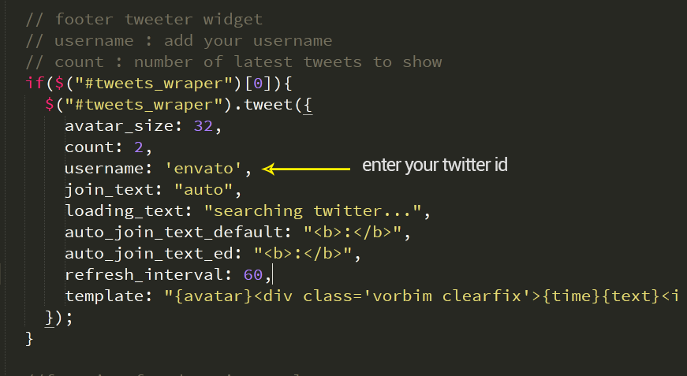
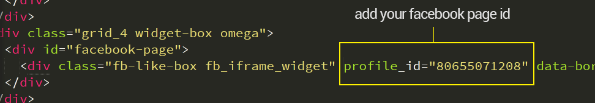
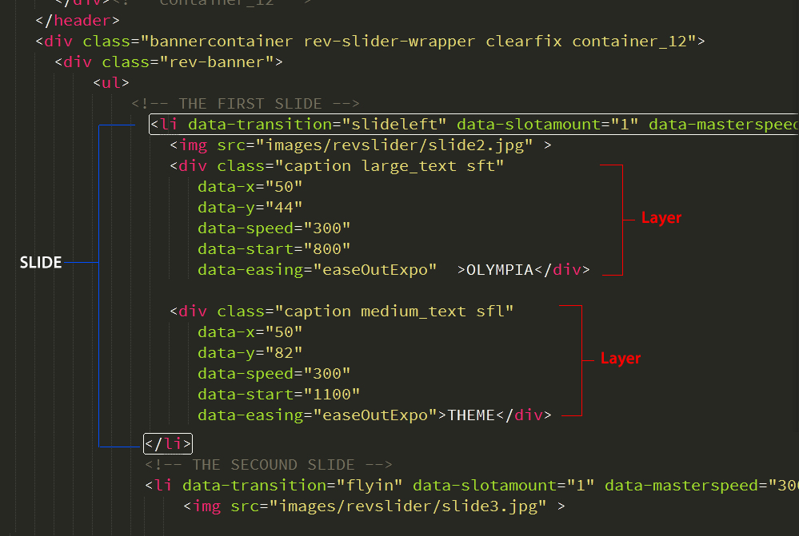

Created: 31/May/2013
By: Speed730
Email: support@speed730.net
Thank you for purchasing my theme. If you have any questions that are beyond the scope of this help file, please feel free to email via my user page contact form here. Thanks so much!
This theme is a responsive layout with 3 columns. All of the information within the main content area is nested within a div with an id of "wrapper". The sidebar's (#column-left, #column-right) content is within a div with an id of "main-container". The general template structure is the same throughout most of the templates. Here is the general structure.
If you would like to edit the color, font, or style of any elements in one of these columns, you would do the following:
for site content - #main-container a {
color: #dfdfdf;
}
If you find that your new style is not overriding, it is most likely because of a specificity problem. Scroll down in your CSS file and make sure that there isn't a similar style that has more weight.
I.E.
#wrapper #main-container a {
color: #dfdfdf;
}
So, to ensure that your new styles are applied, make sure that they carry enough "weight" and that there isn't a style lower in the CSS file that is being applied after yours.
link rel="stylesheet" href="css/styles/red.css" media="screen"
If you would like to edit a specific section of the site, simply find the appropriate label in the CSS file, and then scroll down until you find the appropriate style that needs to be edited.
width Less (The Dynamic Stylesheet language) you can easily generate a css file
style.less - this file containe all the custom css stylesheet needed to change the site styles colors
mixins.less - containe helpers function this must be to generate new style.css
Q : so.. how to i generate a new stylesheet ?
A : follow the steps below :
checkout Tutsplusand watch course Perfect Workflow in Sublime Text 2
if you need help to generate a custom stylesheet file contact me via speed730 support forum or Themeforest - Speed730
List of JS files
editing templates is very easy as they are commented, but there is some help may needed for some advance plugin used in this template :
to disable the responsive multi device retain functinality openup html template and search in header for css section and remove respinsive.css included link from the header and your site will not change the size on other devices
to make side boxed target the div with ID : wrapper {id="wrapper"} and add a class boxed to the wrapper div { id="wrapper" class="boxed"}
open contact.html and search for
openc custom.js and search for function initialize(){} and add your google map latitude and longitude and Markers options
to create your API key, visit the APIs Console at Google Map API v3
for background slideshow open background-slideshow.html and search for tag canvas with ID "bg-slideshow" and add the width & height of your fullsize images
open custom.js and search for a comment "//Background slideshow" below this comment is the background slideshow function add your iamges paths to the js array inside the function, you can experiment and chnage any options there
open custom.js and search for a comment "// footer tweeter widget" and change tweeter username : and tweets count
open any template and go to footer section search for a div with ID "facebook-page" is a nested div, change profile_id="your profule id"
example in index.html template file, quick view features let clients know and see more details of your product, the template can use quick-view-template.php as the file to open, you can use Php/Ajax stuff to send function like product-id but if you want use only simple html you need to creat each file for each product and asign in to the tumbnial href link
with olympia we include 2 type of banners ribbons
class : (star-ribbon) to add star ribbon to banner
class : (star-ribbon-left/star-ribbon-right)ribbon position left or right
class : green-ribbon ribbon color (green-ribbon, blue-ribbon, orange-ribbon, yellow-ribbon, red-ribbon), also you have the PSD file (ustom-star-ribbon.psd) to create your own ribbon
for Revolution Slider Plugin Full documentation check revolution slider plugin
Revolution Slider Html Code integration for olympia in template : revolution-slider.html
I've included 15 psds with this theme:
I've used the following files
Once again, thank you so much for purchasing this theme. As I said at the beginning, I'd be glad to help you if you have any questions relating to this theme. If you have a more general question relating to the themes on ThemeForest, you might consider visiting the speed730 support forum or asking your question in the "Item Discussion" section. if our supper forum is closed
Your Name